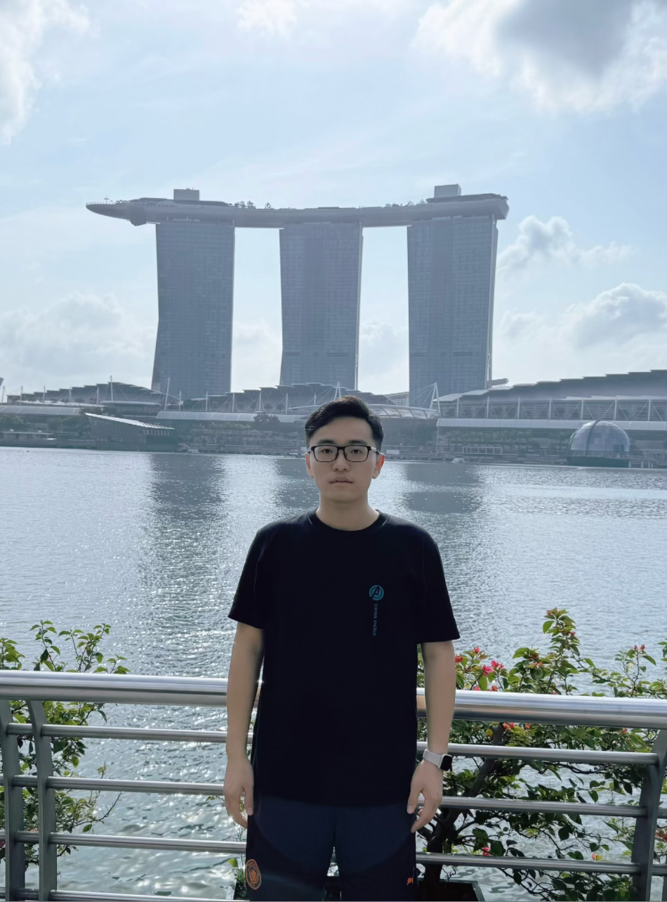

|

|
Hello, welcome to my personal homepage. I am Gu Zirui, born in June 2000. I now live in Nanjing, Jiangsu Province. I graduated from School of Mathematical Sciences of Soochow University with an undergraduate degree and a postgraduate degree from Faculty of Science of the National University of Singapore. After completing my studies, I joined Huatai Securities Co., Ltd. through campus recruitment project and worked in the risk management department. I was responsible for the monitoring and quantitative analysis of business risks. I have a comprehensive knowledge background including mathematics, statistics, computers, economics and finance, and am broadly interested in politics and history. My native language is Chinese and my second language is English(fluently). Programming languages: Python, SQL, R, MATLAB, C++ Hobbies: Reading, Traveling, Swimming, Basketball, Football |